Knime 对接FusionInsight¶
适用场景¶
Knime 3.6.1 ↔ FusionInsight HD V100R002C80SPC200 (HDFS/Hive/Spark)
Knime 4.1.0 ↔ FusionInsight HD 6.5 (HDFS/Hive/Spark)
Knime 4.1.0 ↔ FusionInsight MRS 8.0 (HDFS/Hive/Hetu)
准备工作¶
-
登录FusionInsight Manager创建一个“人机”用户，例如：developuser，具体请参见FusionInsight HD产品文档的
管理员指南->系统设置->权限设置->用户管理->创建用户章节。给developuser用户授予所有访问权限，包含但不限于HDFS、Hive、Spark2x。 -
登录FusionInsight Manager的
系统->用户->更多（developuser）->下载认证凭证，下载developuser对应的认证凭证。解压后，将krb5.conf和user.keytab放在C:\developuser\目录下(developuser文件夹不存在则创建)。 -
登录FusionInsight Manager的
集群->更多->下载客户端，选择“仅配置文件”下载集群的配置文件至本地并解压。并将解压后的..\FusionInsight_Cluster_1_Services_ClientConfig_ConfigFiles\HDFS\config目录的 core-site.xml 和 hdfs-site.xml 放在C:\ecotesting\hadoopConfig目录下。

-
确认客户端机器的时间与FusionInsight HD集群的时间一致，时间差要小于5分钟。
-
安装并配置JDK
-
安装JDK8

-
新增系统环境变量
JAVA_HOME= C:\\Program Files\\Java\\jdk1.8.0_112 -
在系统环境变量PATH添加
%JAVA_HOME%\bin;%JAVA_HOME%\jre\bin;
Knime安装和配置¶
下载Knime¶
-
从Knime官网https://www.knime.com/downloads/download-knime下载操作系统对应的版本下载并安装。本文使用的是64位的Knime Analytics Platform for Windows (installer)。
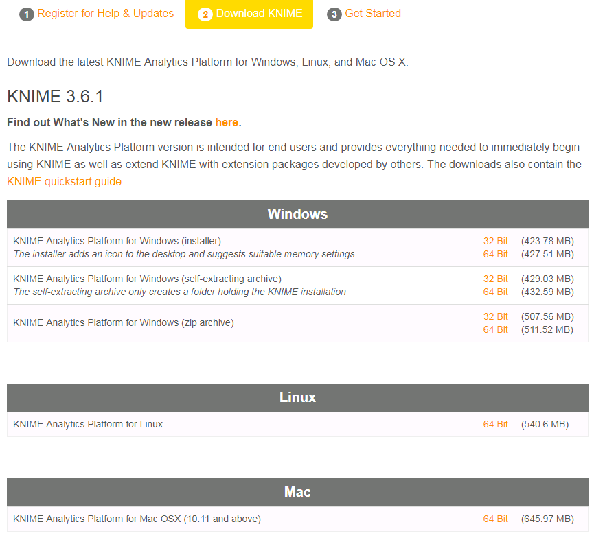
安装Knime extension¶
-
安装并启动Knime Analytics Platform，点击菜单栏
File->Install Knime extensions。搜索big data，在结果中选择KNIME Big Data Extensions。然后点击next。
-
选择
accept licence，点击finish开始安装。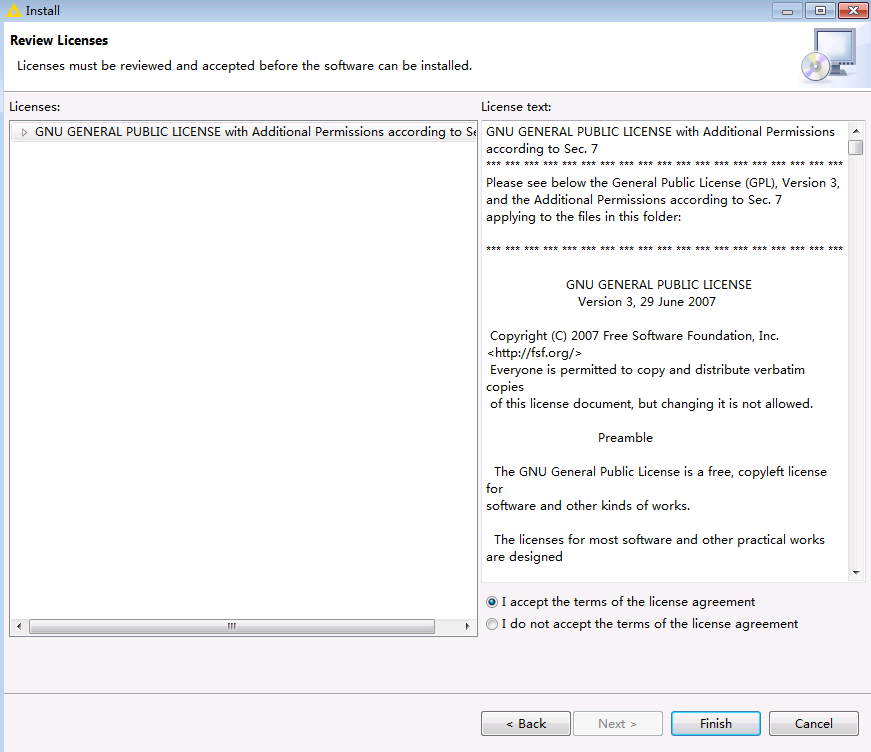
-
在右下角可以看到安装进度。

说明：由于网络原因安装失败时，可重复以上步骤直至安装成功为止。
-
安装完成后重启Knime Analytics Platform。
配置Knime¶
-
在Knime的安装目录中，修改配置文件“knime.ini”，在末尾添加以下内容：
-Djava.security.krb5.conf=C:\developuser\krb5.conf
-
重启Knime Analytics Platform，在菜单栏选择
File->Preferences->KNIME->Big Data->Hadoop，在Hadoop Configuration中填入本地保存的HDFS的hdfs-site.xml和core-site.xml文件路径，点击Apply and Close保存配置。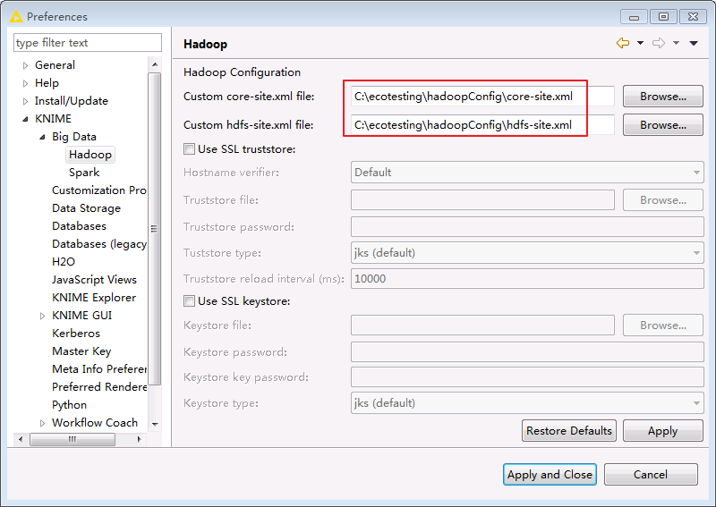
-
在菜单栏选择
File->Preferences->KNIME->Kerberos，填入如下配置后点击Apply and Close保存配置。-
“Kerberos Configuration”选择 Use Kerberos client configuration file (krb5.conf) 并输入文件路径
C:\developuser\krb5.conf -
“How to log in”选择 With keytab 并填入kerberos认证用户名 developuser 和本地keytab文件的路径
C:\developuser\user.keytab，
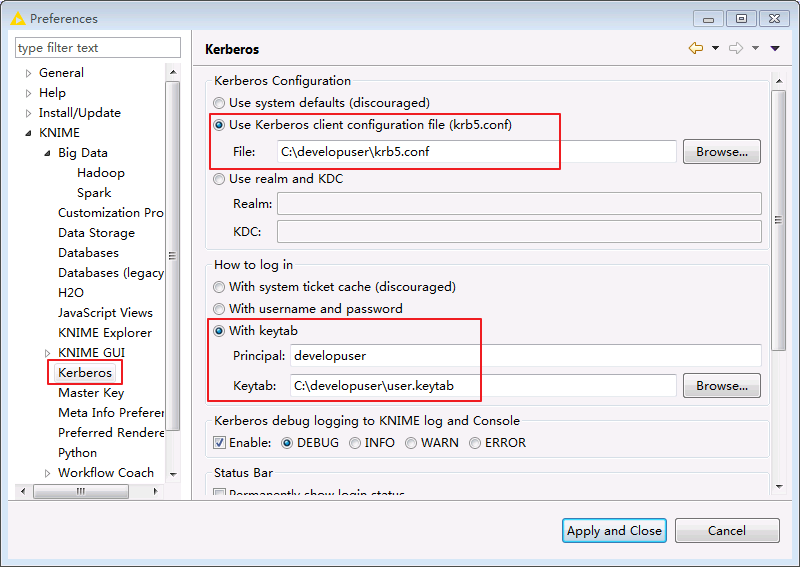
-
Knime连接HDFS¶
前提条件¶
-
已经完成Knime 3.6.1的安装
-
已完成FusionInsight HD的安装，包含HDFS组件
-
已完成本机的Kerberos认证
建立HDFS连接¶
-
在Knime菜单栏中选择
File->New->New KNIME Workflow，命名为“HDFSConnection”后保存。

-
在Node Repository中搜索
hdfs。
-
将
HDFS Connection节点拖入“HDFSConnection”工作区。
-
双击
HDFS Connection节点，填写配置如下：Host: HDFS的NameNode主节点IP Port: 25000 Authentication: Kerberos
-
点击
Test connection，显示如下，表示连接成功。
-
点击
OK，保存配置。
读取HDFS文件¶
-
在工作区中拖入
Download节点，将其与HDFS Connection相连。
-
双击
Download节点，选择要从HDFS文件系统下载的文件（例如/temp.csv）以及文件的本地保存路径。
-
点击
OK，保存配置。 -
点击菜单栏中的
 执行任务。
执行任务。说明：如果需要重新执行任务，选中节点，右键选择“Reset”后该节点点即可重新执行。
-
查看
temp.csv已下载至本地指定目录。
上传文件至HDFS¶
-
将要上传的文件放在本地的一个文件夹中，例如
C:\KnimeData。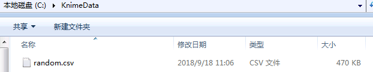
-
在工作区中拖入
List Files,String to URI以及Upload节点，将其进行如下连接。
-
双击
List Files节点，选择要上传文件的本地路径，点击OK，保存配置。
-
双击
Upload节点，选择在HDFS中文件保存的路径，点击OK，保存配置。
-
点击菜单栏中的
执行任务。 -
在服务器上查看HDFS文件系统中所上传的文件。

Knime连接Hive¶
前提条件¶
-
已经完成Knime 3.6.1的安装
-
已完成FusionInsight HD的安装，包含Hive组件
-
已完成本机的Kerberos认证
建立Hive连接¶
-
在Knime菜单栏中选择
File->New->New KNIME Workflow，命名为“HiveConnection”后保存。
-
在“HiveConnection”工作区中拖入一个
Hive Connector节点。
-
双击
Hive Connector节点，填写配置如下：Hostname: Hive的HiveServer其中一个节点 Port: 21066 Parameter: principal=hive/hadoop.hadoop.com@HADOOP.COM;saslQop=auth-conf;auth=KERBEROS; Authentication: Use Kerberos
-
点击
OK，保存配置。
写入Hive表¶
-
在工作区中拖入以下几个节点，并进行如下连接。

-
双击
HDFS Connection节点，填写配置如下。点击OK保存配置。Host: HDFS的NameNode主节点IP Port: 25000 Authentication: Kerberos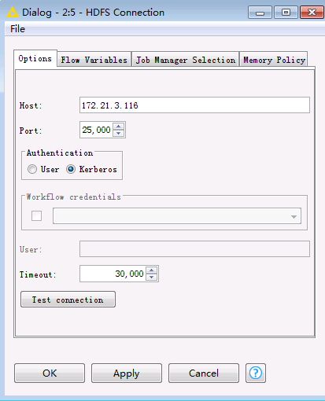
-
双击
File Reader节点，选择本地将要上传的文件，例如Knime工作区C:\Users\wangna\knime-workspace中已默认下载下来的C:\Users\wangna\knime-workspace\Example Workflows\TheData\Basics\adult.csv。点击OK保存配置。
-
双击
Hive Loader节点，选择文件要上传至服务器的路径以及表名，点击OK保存配置。
-
点击菜单栏中的
执行任务。 -
在FusionInsight客户端使用beeline查看导入Hive中的表。
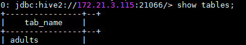

Knime连接Hetu¶
相关配置：
- 首先配置KNIME安装路径下的文件knime.ini

-Djava.security.krb5.conf=C:/172-16-4-165-651client/krb5.conf
-Djava.security.auth.login.config=C:/172-16-4-165-651client/jaas.conf
-Dzookeeper.server.principal=zookeeper/hadoop.hadoop.com
-Dsun.security.krb5.debug=false
-Dzookeeper.sasl.clientconfig=Client
-Dzookeeper.auth.type=kerberos
- 配置本地hosts文件

- 启动KNIME，在File -> Preferences -> KNIME -> Databases -> Add
连接ID，Name就写hetu, Database type 选default
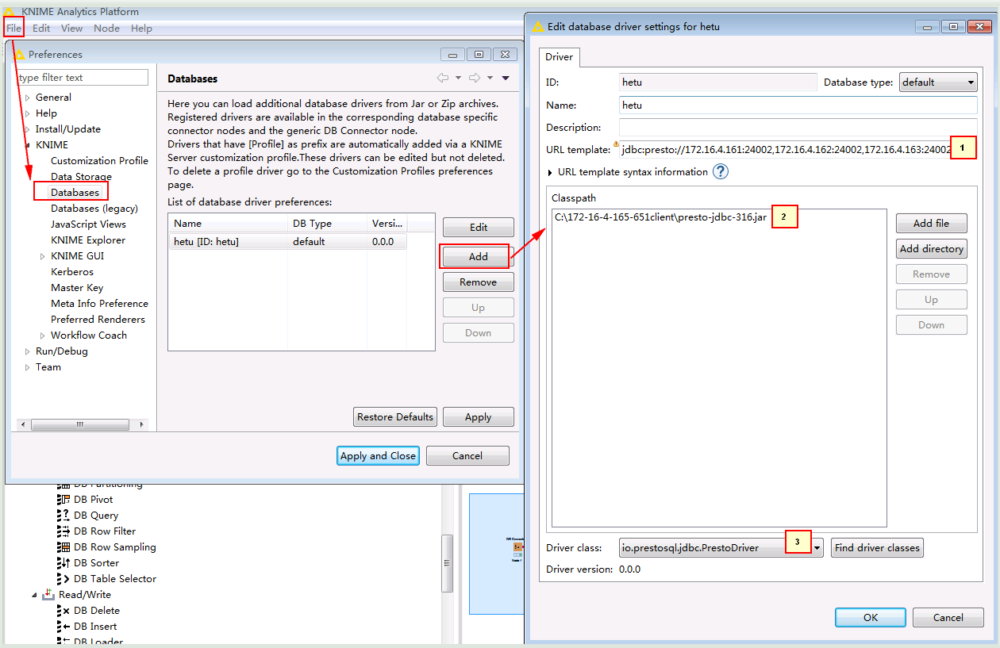
1. jdbc:presto://172.16.4.161:24002,172.16.4.162:24002,172.16.4.163:24002/hive/default?serviceDiscoveryMode=zooKeeper&zooKeeperNamespace=hsbroker&deploymentMode=on_yarn&user=developuser&SSL=true&SSLTrustStorePath=C:/172-16-4-165-651client/hetuserver.jks&KerberosConfigPath=C:/172-16-4-165-651client/krb5.conf&KerberosPrincipal=developuser&KerberosKeytabPath=C:/172-16-4-165-651client/user.keytab&KerberosRemoteServiceName=HTTP&KerberosServicePrincipalPattern=%24%7BSERVICE%7D%40%24%7BHOST%7D
2. 点Add file从本地添加准备好的驱动jar包presto-jdbc-316.jar
3. 点击Find driver classes自动配置
- 整个工作流为

- DB Connector配置

注意要在advanced里面把transaction勾选掉

- DB Query Reader配置
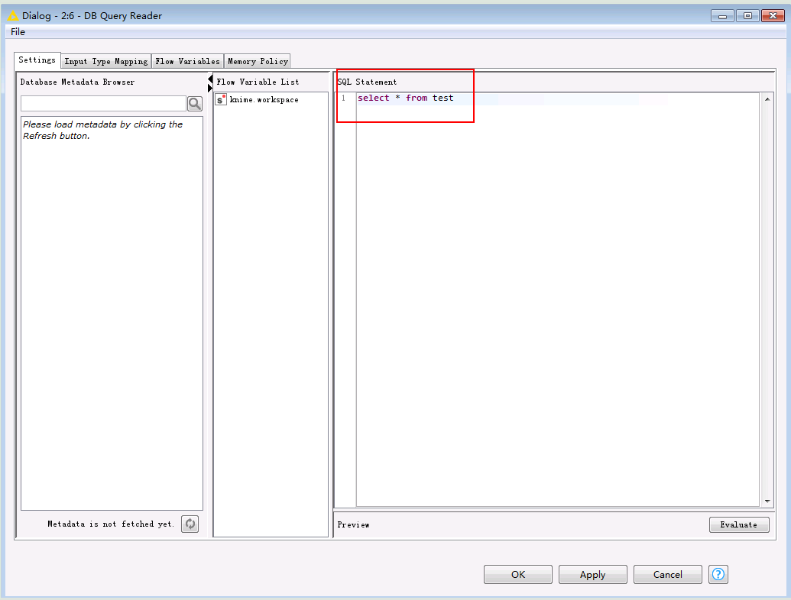
- CSV Writer配置

- 启动工作流后去本地文件检查

Knime连接Spark2x¶
前提条件¶
-
已经完成Knime 3.6.1的安装
-
已完成FusionInsight HD客户端安装，具体请参见FusionInsight HD产品文档的
应用开发指南->安全模式->安全认证->配置客户端文件章节。说明：FusionInsight客户端安装目录为
/opt/hadoopclient，且能使用spark-submit命令提交任务。
安装Spark Job Server¶
说明：以下操作步骤以CentOS 7.x为例，其他操作系统请参考KNIME官方文档https://download.knime.org/store/3.6/knime_extension_for_apache_spark_2.3.0.pdf执行相应的命令。
-
从https://docs.knime.com/latest/bigdata_extensions_admin_guide/index.html#_overview的“Spark Jobserver downloads”章节，根据集群以及操作系统版本获取对应的
Spark Job Server安装包。基于FusionInsight HD 6.5.1的Spark2x的版本为2.3.2，故选择下载 CDH 5.9 - 5.15 (Apache Spark 2.3) ，下载文件名为 spark-job-server-0.7.0.3-KNIME_spark-2.3_cdh.tar.gz。
-
将下载的 spark-job-server-0.7.0.3-KNIME_spark-2.3_cdh.tar.gz 上传至已安装FusionInsight HD客户端节点，例如
/opt目录下。执行以下命令进行安装配置：LINKNAME=spark2-job-server tar -xvf /opt/spark-job-server-0.7.0.3-KNIME_spark-2.3_cdh.tar.gz -C /opt ln -s /opt/spark-job-server-0.7.0.3-KNIME_spark-2.3_cdh /opt/${LINKNAME} useradd -d /opt/${LINKNAME}/ -M -r -s /bin/false spark-job-server su -l -c "hdfs dfs -mkdir -p /user/spark-job-server ; hdfs dfs -chown -R spark-job-server /user/spark-job-server" spark-job-server chown -R spark-job-server:spark-job-server /opt/${LINKNAME} /opt/spark-job-server-0.7.0.3-KNIME_spark-2.3_cdh

配置Spark Job Server¶
-
将
C:\developuser\krb5.conf上传至安装节点的/etc目录下。启动spark job server时调用“kerberos-ticket-renewer.sh”产生票据依赖于/etc/krb5.conf文件。
-
将
C:\developuser\user.keytab上传至安装节点的/opt/spark2-job-server目录下。
-
修改
/opt/spark2-job-server/spark-job-server-init.d设置Java和Spark运行的环境变量。在“jobserver_start()”开始处新增 source /opt/hadoopclient/bigdata_env。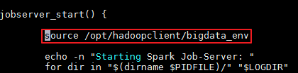
-
修改
/opt/spark2-job-server/environment.conf文件。设置 master = "yarn-client" ，以yarn-client模式运行spark。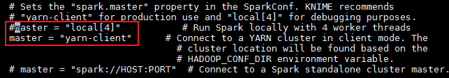
-
修改
/opt/spark2-job-server/settings.sh文件。- 设置SPARK_HOME。由于不存在目录
/opt/cloudera/parcels/SPARK2/，故else语句的SPARK_HOME生效。在else语句中设置SPARK_HOME=/opt/hadoopclient/Spark2x/spark。
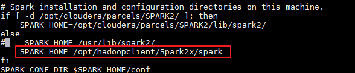
- 将 HADOOP_CONF_DIR 的设置注释或删除。
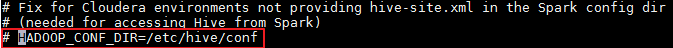
说明：yarn-client模式运行spark需要从参数HADOOP_CONF_DIR设置的目录加载相应的环境变量和配置文件。启动spark job server(执行spark-job-server-init.d start或者systemctl start spark2-job-server)时执行命令“source /opt/hadoopclient/bigdata_env”已设置HADOOP_CONF_DIR为正确的值。因此需要将settings.sh文件中HADOOP_CONF_DIR设置的值注释以免将正确的值覆盖，导致错误。
- 设置 JOBSERVER_KEYTAB 和 JOBSERVER_PRINCIPAL。
export JOBSERVER_KEYTAB=/opt/spark2-job-server/user.keytab export JOBSERVER_PRINCIPAL=developuser@HADOOP.COM
- 设置SPARK_HOME。由于不存在目录
-
登录FusionInsight Manager，修改HDFS的core-site.xml文件配置。
- 主页面选择
集群->HDFS，在左侧选择配置->全部配置->自定义，添加以下两个参数
hadoop.proxyuser.spark-job-server.hosts = * hadoop.proxyuser.spark-job-server.groups = *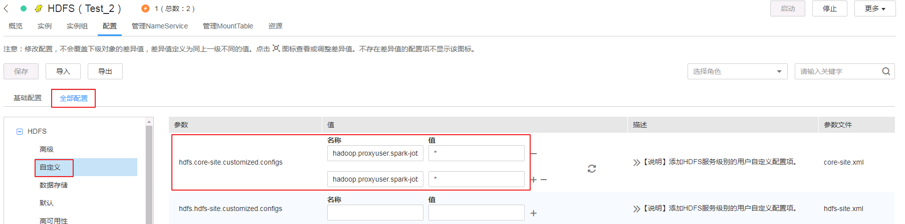
- 保存配置，并重启HDFS以及依赖的服务。
- 主页面选择
启动和停止Spark Job Server¶
-
设置从系统启动或停止Spark Job Server。
ln -s /opt/spark2-job-server/spark-job-server-init.d /etc/init.d/spark2-job-server systemctl daemon-reload systemctl enable spark2-job-server -
启动Spark Job Server。
systemctl start spark2-job-server ps -ef |grep spark2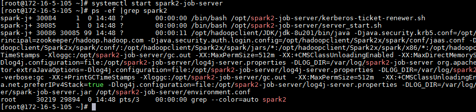
说明：
启动Spark Job Server的另外一种方式是执行命令
/opt/spark2-job-server/spark-job-server-init.d start在
/tmp目录下可以查看缓存的票据和其他数据。
在
/var/log/spark2-job-server目录下可以查看运行的日志。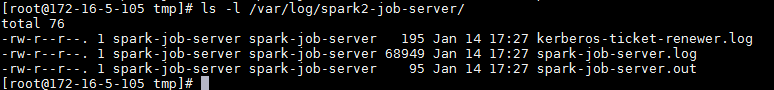
-
启动后在浏览器中输入http://ip:8090，其中ip为安装节点的IP，返回以下界面则表示启动成功。

-
停止Spark Job Server。
systemctl stop spark2-job-server
建立Spark连接¶
-
在Knime菜单栏中选择
File->New->New KNIME Workflow，命名为“SparkContext”后保存。在工作区中拖入一个 Create Spark Context 节点和一个 Destroy Spark Context 节点并连接。
-
双击 Create Spark Context 节点进行如下配置。
-
在Context Settings页面
-
Spark version：选择集群中使用的Spark版本2.3
-
Context name：自定义Spark Context名字为knimeSparkContext

-
在Connection Settings页面
-
Jobserver URL：http://ip:8090/，其中IP为Spark Job Server 所在节点IP
-
Authentication: None
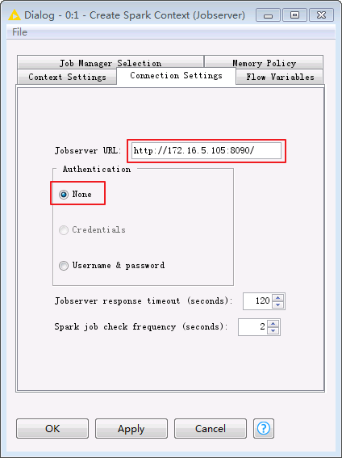
-
点击 OK 保存配置。
-
-
点击菜单栏
按钮，测试连接是否有错，若显示如下，表明节点配置无误。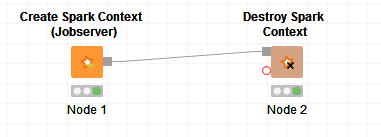
-
在浏览器中打开Jobserver URL中配置的地址，可以进入Spark Job Server UI界面，可以看到刚才建立的Spark Context，显示如下：
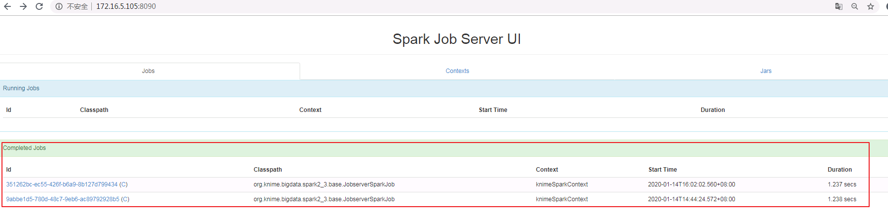
-
登录Funsion Manager进入Yarn ResourceManager WebUI查看application的日志，FinalStatus显示为 SUCCEEDED。


Spark应用实例¶
Spark应用实例下载地址https://www.knime.com/nodeguide/big-data/spark-executor。
Hive to Spark to Hive¶
-
下载实例“Hive to Spark to Hive”，下载文件名为 05_Hive_to_Spark_to_Hive.knwf。
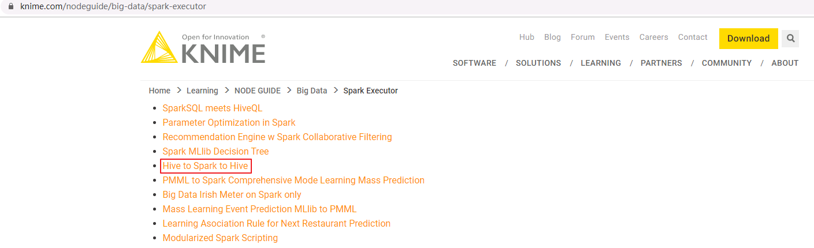

-
点击KNIME Analytics Platform的菜单栏
File->Import KNIME Workflow导入 05_Hive_to_Spark_to_Hive.knwf。
-
双击
HDFS Connection节点，填写配置如下。点击OK保存配置。Host: HDFS的NameNode主节点IP Port: 25000 Authentication: Kerberos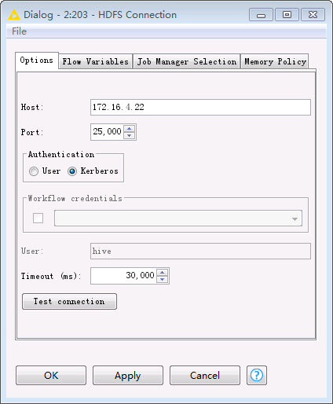
-
双击
File Reader节点，选择将要上传的本地文件，例如Knime工作区C:\Users\wangna\knime-workspace中已默认下载下来的C:\ecotesting\knime-workspace\Example Workflows\TheData\Customers\ContractData.csv。点击OK保存配置。
-
双击
Hive Connector节点，填写配置如下。点击OK保存配置。Hostname: Hive的HiveServer其中一个节点的IP Port: 21066 Parameter: principal=hive/hadoop.hadoop.com@HADOOP.COM;saslQop=auth-conf;auth=KERBEROS; Authentication: Use Kerberos
-
双击
Hive Loader节点，选择文件要上传至HDFS文件系统路径以及表名，点击OK保存配置。
-
双击
Create Spark Context节点，填写配置如下。点击OK保存配置。-
在Context Settings页面
-
Spark version：选择集群中使用的Spark版本2.3
-
Context name：自定义Spark Context名字为knimeSparkContext
-
在Connection Settings页面
-
Jobserver URL：http://ip:8090/，其中IP为Spark Job Server 所在节点IP
-
Authentication: None
-
-
Hive to Spark、Spark to Hive和Database Connection Table Reader保持默认配置不变。双击Spark to Hive节点可查看创建的Hive表的“Table name”为 knimeTest。
-
点击菜单栏中的
执行任务。 -
登录Funsion Manager进入Yarn ResourceManager WebUI查看application的日志，State显示为 RUNNING。
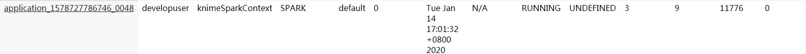
-
在FusionInsight客户端使用beeline查看导入Hive中的表。通过
Hive Loader节点导入的表contactdata以及Spark to Hive节点导入的表knimetest均已导入Hive。select count(*) from contactdata; select count(*) from knimetest;
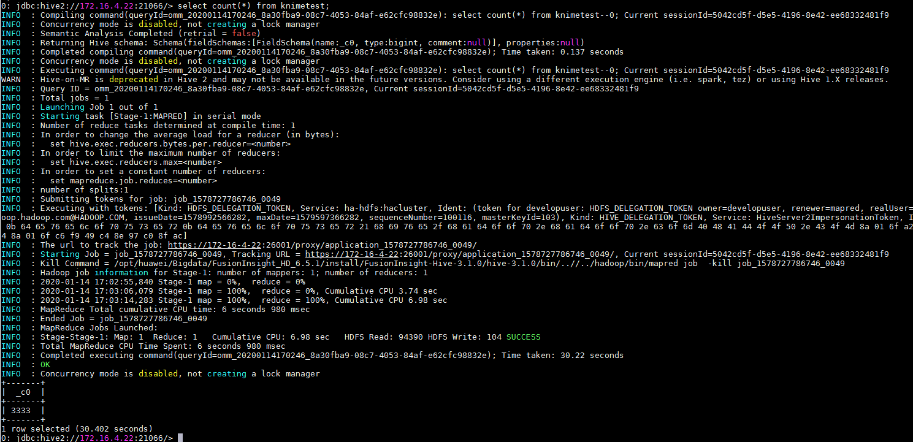
FAQ¶
启动Spark Job Server时，返回kinit: command not found¶
【问题描述】
执行/opt/spark2-job-server/spark-job-server-init.d start时返回 kinit: command not found。
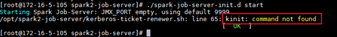
在Knime Analytics Platform中运行Create Spark Context(Jobserver)时失败，返回 Possible reason: Incompatible Jobserver version, malconfigured Spark Jobserver。

查看运行日志/var/log/spark2-job-server/jobserver-knimeSparkContext7418932986808208865/spark-job-server.log返回以下错误： DestHost:destPort 172-16-4-22:26004 , LocalHost:localPort 172-16-5-105/172.16.5.105:0. Failed on local exception: java.io.IOException: org.apache.hadoop.security.AccessControlException: Client cannot authenticate via:[TOKEN, KERBEROS] , while invoking ApplicationClientProtocolPBClientImpl.getNewApplication over 167 after 2 failover attempts. Trying to failover after sleeping for 43502ms.

【问题分析】
从spark-job-server-init.d可以看出使用spark-job-server用户启动Spark Job Server。spark-job-server用户没有权限使用FusionInsight HD客户端安装的kinit。如果操作系统没有安装krb5-workstation，则会返回kinit: command not found，无法产生认证票据。
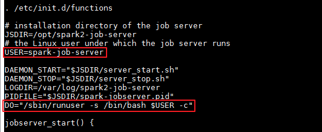
【解决方法】
方式一：执行yum install krb5-workstation安装krb5-workstation。
方式二：在/opt/spark2-job-server/ spark-job-server-init.d的“jobserver_start()”开始处新增 source /opt/hadoopclient/bigdata_env。
运行Create Spark Context(Jobserver)时失败，返回Can't get Kerberos realm¶
【问题描述】
当/opt/spark2-job-server/environment.conf设置master = "yarn-client"，在Knime Analytics Platform中运行Create Spark Context(Jobserver)时失败，返回 Yarn application has already ended! It might have been killed or unable to launch application master.
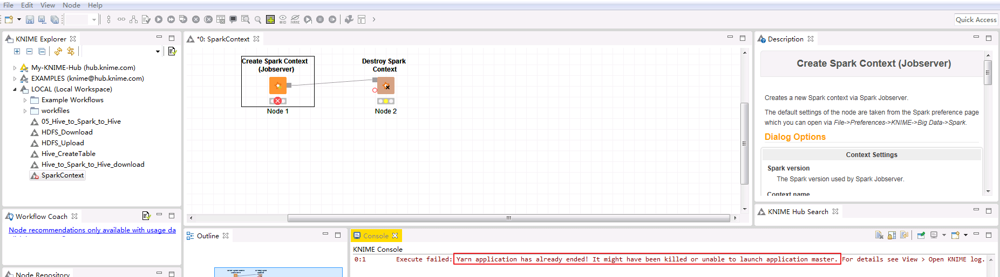
登录Funsion Manager进入Yarn ResourceManager WebUI查看application的日志，返回错误如下：
```
INFO SecurityManager: SecurityManager: authentication enabled; ui acls enabled; users with view permissions: Set(admin, developuser); groups with view permissions: Set(); users with modify permissions: Set(admin, developuser); groups with modify permissions: Set()
Exception in thread "main" java.lang.IllegalArgumentException: Can't get Kerberos realm
at org.apache.hadoop.security.HadoopKerberosName.setConfiguration(HadoopKerberosName.java:65)
at org.apache.hadoop.security.UserGroupInformation.initialize(UserGroupInformation.java:318)
at org.apache.hadoop.security.UserGroupInformation.setConfiguration(UserGroupInformation.java:364)
at org.apache.spark.deploy.SparkHadoopUtil.
```


【问题分析】
yarn-client模式运行spark需要从参数HADOOP_CONF_DIR设置的目录加载相应的环境变量和配置文件，该问题是由于HADOOP_CONF_DIR设置不正确引起的。
在Knime Analytics Platform中运行Create Spark Context(Jobserver)时，调用/opt/spark2-job-server/manager_start.sh提交spark任务。
在manager_start.sh中使用FusionInsight客户端的spark-submit命令提交任务之前调用了/opt/spark2-job-server/setting.sh。在/opt/spark2-job-server/setting.sh默认设置HADOOP_CONF_DIR=/etc/hive/conf。使用FusionInsight客户端的spark-submit提交任务时，环境变量HADOOP_CONF_DIR正确值应设置为/opt/hadoopclient/HDFS/hadoop/etc/hadoop。
【解决方法】
在/opt/spark2-job-server/ spark-job-server-init.d的“jobserver_start()”开始处新增 source /opt/hadoopclient/bigdata_env。
在/opt/spark2-job-server/setting.sh中 将HADOOP_CONF_DIR的设置注释或者删除。或者设置为正确的值 HADOOP_CONF_DIR=/opt/hadoopclient/HDFS/hadoop/etc/hadoop。